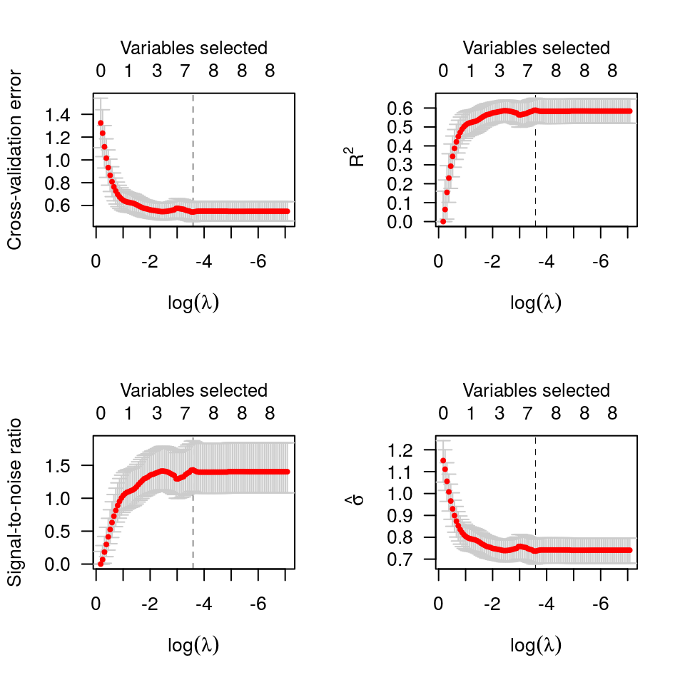
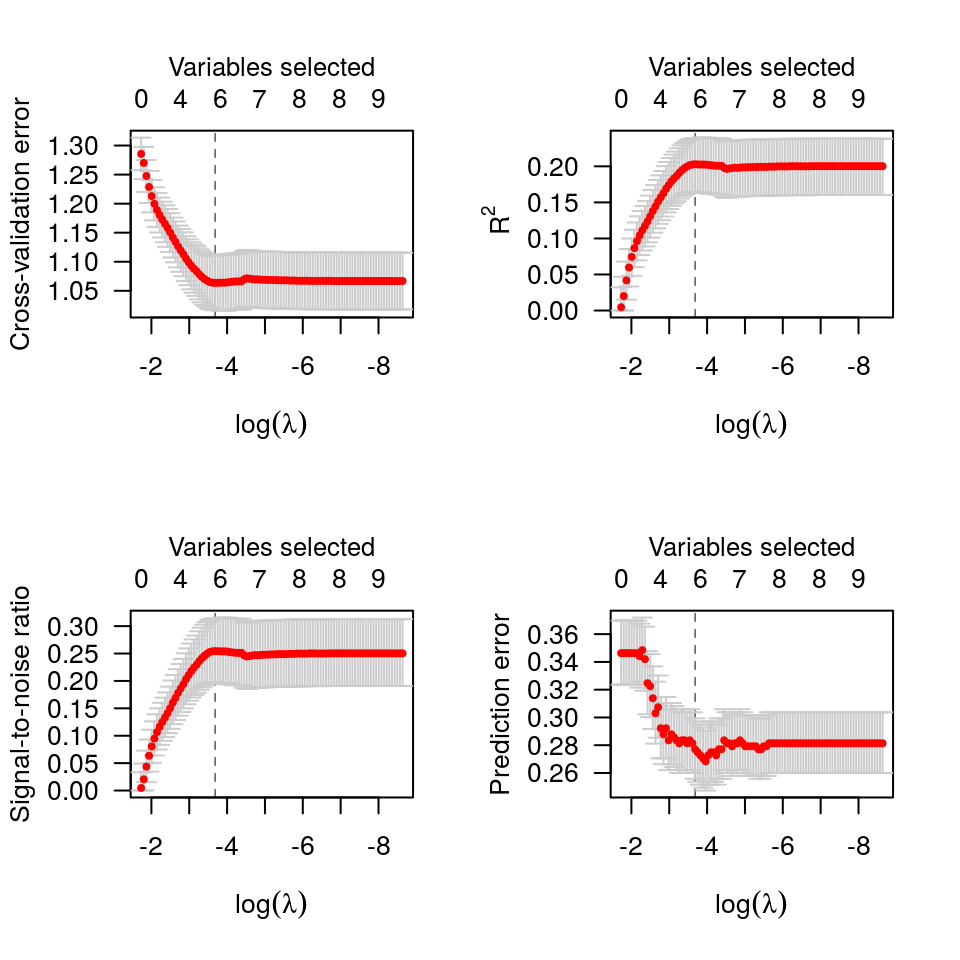
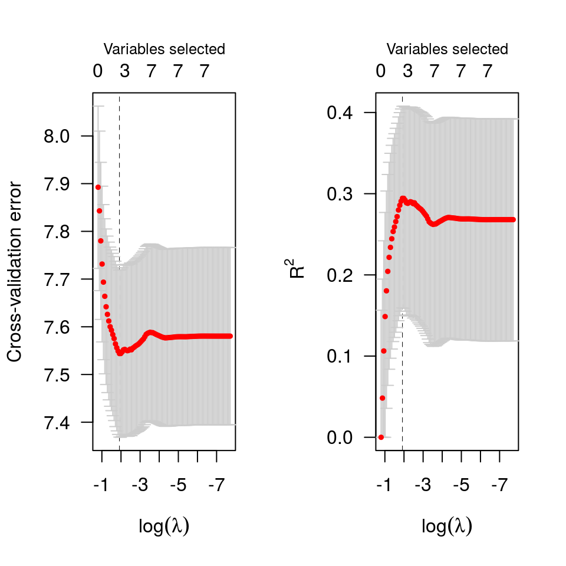

plot-cv-ncvreg.RdPlots the cross-validation curve from a cv.ncvreg or
cv.ncvsurv object, along with standard error bars.
# S3 method for cv.ncvreg plot(x, log.l=TRUE, type=c("cve", "rsq", "scale", "snr", "pred", "all"), selected=TRUE, vertical.line=TRUE, col="red", ...)
| x | A |
|---|---|
| log.l | Should horizontal axis be on the log scale? Default is TRUE. |
| type | What to plot on the vertical axis. |
| selected | If |
| vertical.line | If |
| col | Controls the color of the dots (CV estimates). |
| … | Other graphical parameters to |
Error bars representing approximate 68% confidence intervals are
plotted along with the estimates at value of lambda. For
rsq and snr applied to models other than linear
regression, the Cox-Snell R-squared is used.
Breheny, P. and Huang, J. (2011) Coordinate descent algorithms for nonconvex penalized regression, with applications to biological feature selection. Ann. Appl. Statist., 5: 232-253.
# Linear regression -------------------------------------------------- data(Prostate) cvfit <- cv.ncvreg(Prostate$X, Prostate$y) plot(cvfit)op <- par(mfrow=c(2,2)) plot(cvfit, type="all")par(op) # Logistic regression ------------------------------------------------ data(Heart) cvfit <- cv.ncvreg(Heart$X, Heart$y, family="binomial") plot(cvfit)op <- par(mfrow=c(2,2)) plot(cvfit, type="all")par(op) # Cox regression ----------------------------------------------------- data(Lung) cvfit <- cv.ncvsurv(Lung$X, Lung$y) op <- par(mfrow=c(1,2)) plot(cvfit) plot(cvfit, type="rsq")par(op)